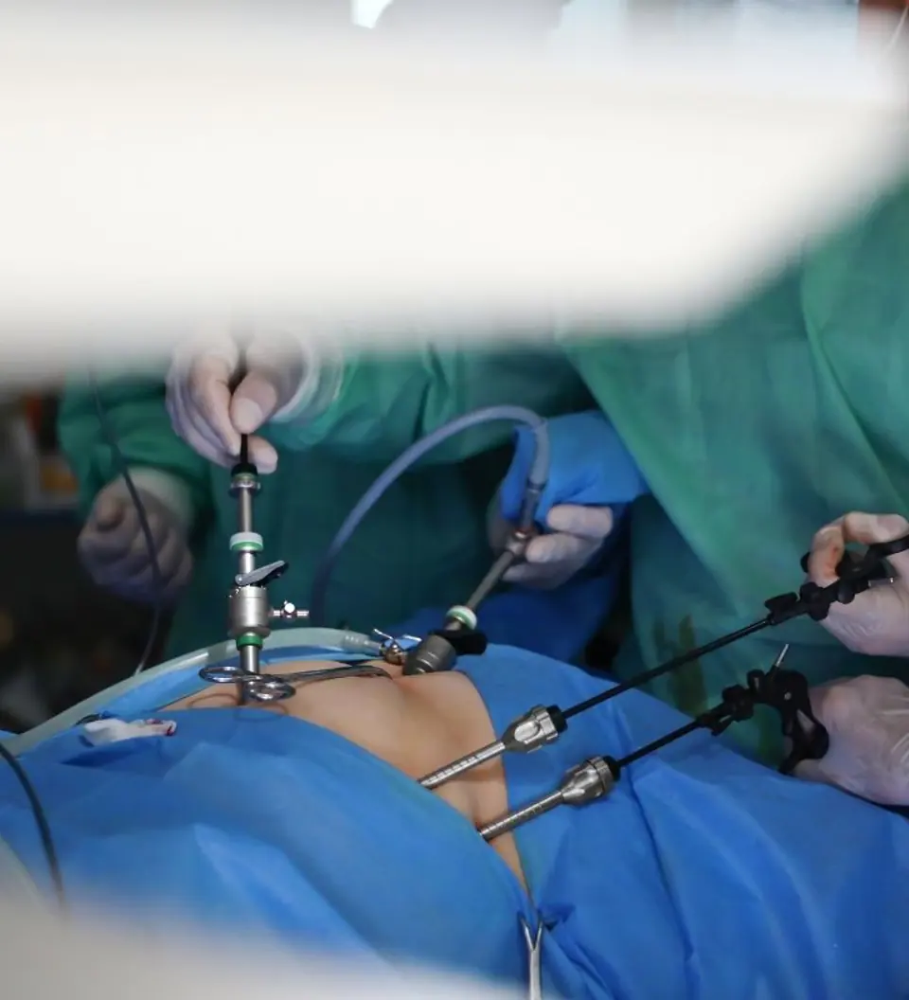
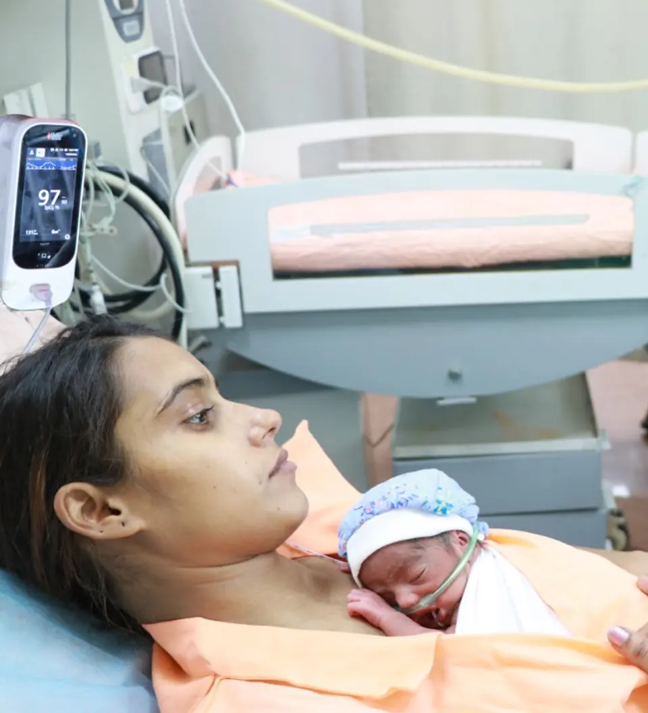

Vardhaman Hospital brings maternity care, gynaecological surgery, fertility treatment and newborn & pediatric care together — with 24 Hrs gynaec, obstetric and pediatric emergency services, all under one roof.
From your first antenatal visit to the moment you hold your baby — our obstetric team, led by senior gynaecologists, supports you through every step of pregnancy.
Our fully equipped labour room and operation theatre handle both normal and complicated deliveries, with obstetric emergency cover available 24 hours a day.
Advanced gynaecological surgery — open, vaginal and minimally-invasive — performed by our gynaecologists together with Dr. Pradeep V. Mistry (M.B.B.S., M.S.), a general & laparoscopic surgeon with 43 years of experience.


Our newborn & pediatric care centre — with consultant pediatrician Dr. Piyush B. Patel (M.B.B.S., M.D., D.C.H.) — looks after your child from the very first breath.
Preventive, diagnostic and supportive services for women of every age — from zero to ninety.
Expert consultation for menstrual problems, menopause, infections and all women's health concerns.
In-house ultrasound for pregnancy monitoring and gynaecological diagnosis.
Confidential counselling and complete family planning services, including tubal ligation.
A dedicated infertility centre offering evaluation, treatment and IUI for couples trying to conceive.
Screening and early detection of women's cancers — timely diagnosis saves lives.
Immunisation for newborns, children and women at every stage of life.
Everything needed for safe deliveries, surgery and newborn care — under one roof.
Round-the-clock emergency support for obstetric, gynaecological and pediatric care needs.
Helpful guidance for expecting mothers — pregnancy check-ups, preparing for delivery, care after surgery and newborn vaccination.
Tell us your concern and our team will guide you to the right doctor. Book an appointment on WhatsApp or call us directly.